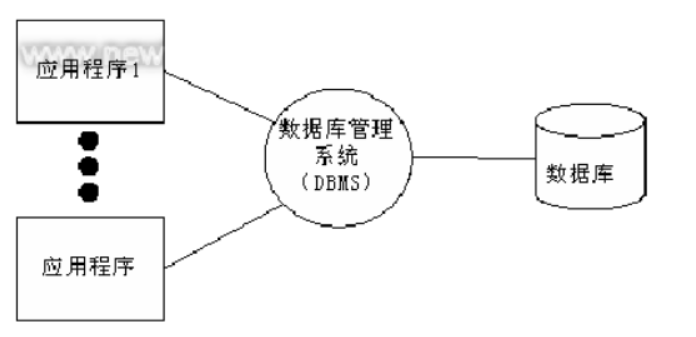
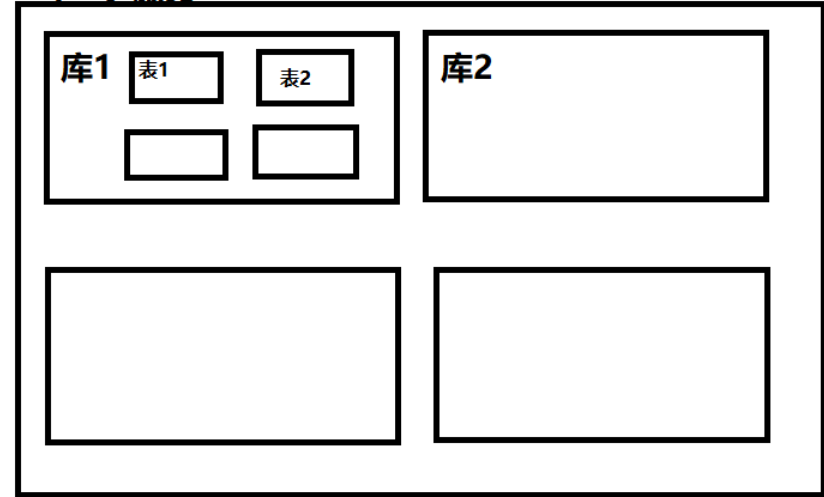
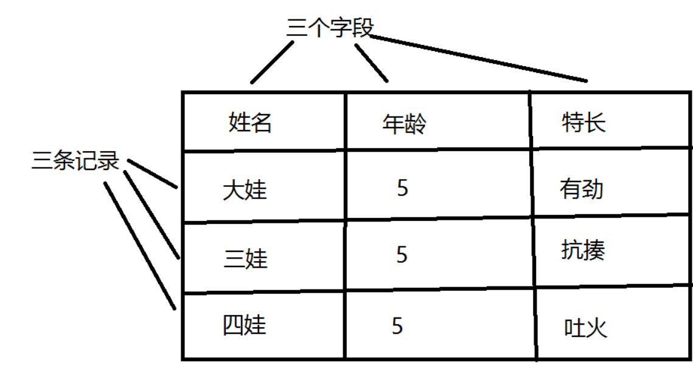
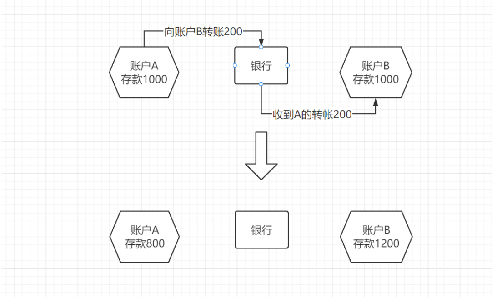

SQLite是一款轻型的关系型数据库，也是一个遵守事务特性的数据库管理系统。
SQLite占用资源非常低，应用广泛，常被嵌入各种软件和服务中使用。
数据库，安装在操作系统（window，Linux，Mac、…）之上的软件，可以存大量的数据(百万以上)，个别数据库可以达到数十亿条数据！
作用：存储数据，管理数据
基本上所有的程序都会使用


# python代码
import sqlite3
# 初始化连接，并创建一个库
conn = sqlite3.connect('test_a.db')
conn.commit()
conn.close()
- 二维结构(行， 和列组成)
- 字段(列)，定义该列的名字以及这一列下面能放什么类型数据
- 行，一行表示一条完整的数据记录

sqlite是python中自带的库， 下面演示如何创建一个表
语法
create table 表名(字段名1 数据类型, 字段名2 数据类型, ... 字段名n 数据类型);
# python代码
import sqlite3
conn = sqlite3.connect('test.db')
c = conn.cursor()
c.execute('''CREATE TABLE cdcdcdcd
(ID INTEGER PRIMARY KEY AUTOINCREMENT,
NAME VARCHAR,
AGE INT,
ADDRESS VARCHAR,
SALARY float);''')
conn.commit()
c.close()
conn.close()
# ！！！ 注意注意注意：代码中所有的符号都是英文的
# 一个表至少需要有一个列
# vscode如果要查看表的视图结构则需要安装 sqlite 插件 和 sqlite viewer插件
# pycharm 查看视图结构则需安装 sqlite drivers
数字类型
日期与时间类型
text 和blob(用于超长文本)： text存储较长的文本 blob存储二进制字节串
添加字段语法(add)
alter table 表名 add 新增的字段名 数据类型;
删除字段语法(drop)
alter table 表名 drop 要删除的字段名;
修改数据类型 /修改字段名
sqlite不支持直接修改字段的类型和名称，如需改动可以先删除字段，在重新添加字段
修改表名语法
alter table 旧表名 rename to 新表名;
删除表语法
drop table 表名;
PRIMARY KEY # 主键约束
AUTOINCREMENT # 自增长
# 为每个表设置一个唯一数据的字段，方便于进行数据的操作。
语法
insert into 表名 values(值1，值2，值3...),(值1，值2，值3...);
# python代码
import sqlite3
conn = sqlite3.connect('test.db')
c = conn.cursor()
c.execute(
'''
insert into users values
('张三',33,'uu'),
('李四',33,'ttt'),
('六七',33,'xx');
'''
)
c.execute(
'''
insert into users(user_l) values
('游泳'),
('健身');
'''
)
conn.commit()
c.close()
conn.close()
# 注意添加的值如果是字符串和日期类型，则需要加引号引起来
语法
delete from 表名 where 条件;
注意: delete语句后如果不加where条件,所有记录会全部清空； 例 delete from 表名
# python代码
import sqlite3
conn = sqlite3.connect('test.db')
c = conn.cursor()
c.execute("DELETE from COMPANY where ID=2;")
conn.commit()
c.close()
conn.close()
语法
update 表名 set 字段1=新的值,字段2=值... where 条件;
注意: update语句后如果不加where条件,这一列下所有满足条件的都会被改变； 例 update 表名 set 字段=值
# python代码
import sqlite3
conn = sqlite3.connect('test.db')
c = conn.cursor()
c.execute("UPDATE COMPANY set SALARY = 25000.00 where ID=1")
conn.commit()
c.close()
conn.close()
# 新增，删除，修改都需要执行 commit
语法
select * from 表名 查询所有的
select 字段1,字段名2 from 表名 where 条件; 根据条件筛选查询
# python代码
import sqlite3
conn = sqlite3.connect('test.db')
c = conn.cursor()
c.execute("SELECT id, name, address, salary from COMPANY")
cursor=c.fetchall()
for row in cursor:
print("ID = ", row[0])
print( "NAME = ", row[1])
print("ADDRESS = ", row[2])
print("SALARY = ", row[3], "\n")
c.close()
conn.close()
# 注意，查询的时候不需要执行 commit
where子句在sql语句中扮演了重要角色，主要通过一定的运算条件进行数据的筛选，常用的几种运算符如下
+ 加
- 减
* 乘
/ 除
% 取余数
// 取商数
or 或
and 与
not 取反
> 大于
< 小于
>= 大于等于
<= 小于等于
= 等于
!= 不等于
注意：符号是都是英文
原子性：是指事务是一个不可分割的工作单位，事务中的操作要么都发生，要么都不发生。
原子性针对的是同一个事务，比如说A向B转钱：
A转出200给B(A-200)
B收到200(B+200)
这两个动作就是一组事务，要么全部完成，要么全部不完成

一致性（Consistency）
事务前后数据的完整性必须保持一致
比如说上述例子，在转账前A账户的钱加上B账户的钱为2000，那么在转账事务发生后账户A与账户B的钱的总和也应该为2000。
隔离性（Isolation）
事务的隔离性是多个用户并发访问数据库时，数据库为每一个用户开启的事务，不能被其他事务的操作数据所干扰，多个并发事务之间要相互隔离。
持久性（Durability）
持久性是指一个事务一旦被提交，它对数据库中数据的改变就是永久性的，接下来即使数据库发生故障也不应该对其有任何影响。